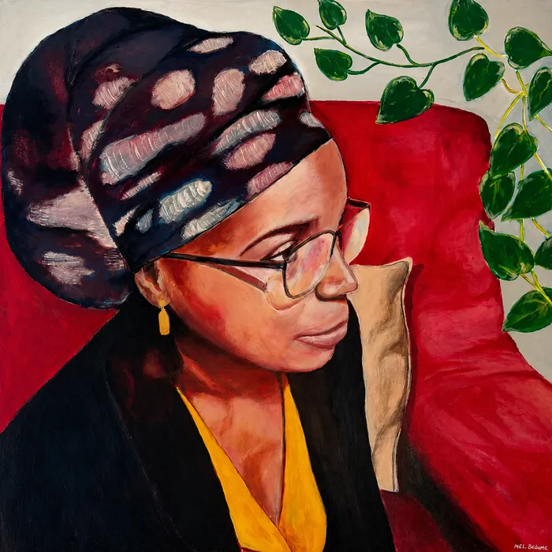
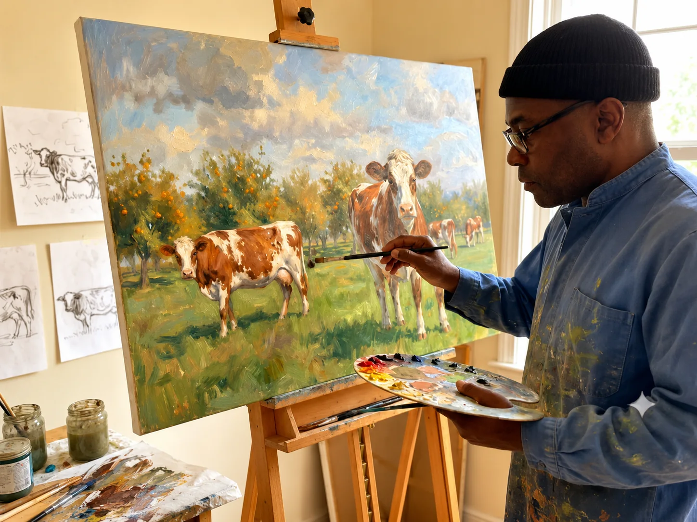
De Kinshasa aux paysages de Normandie
Axel Bahuna
« Dans chacun de mes tableaux, je cherche d’abord la lumière. »
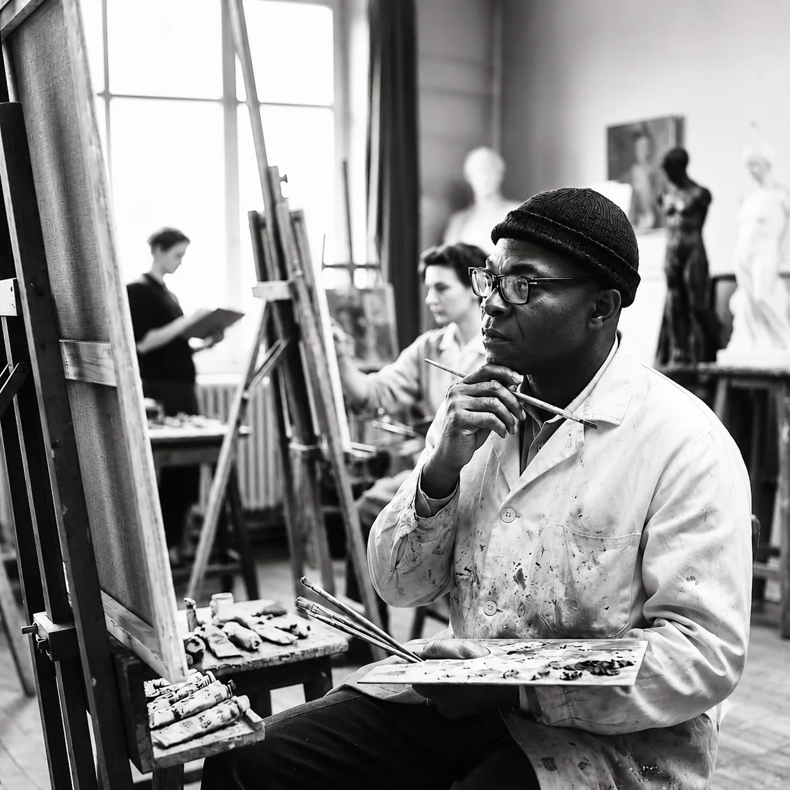
1954
Né à Kinshasa
L’artiste
Peindre, simplement
Axel Bahuna est un artiste peintre figuratif installé à Saint-Désir, près de Lisieux. Depuis l’enfance, il dessine, observe et peint sans chercher à s’enfermer dans une seule catégorie.
Né en 1954 à Kinshasa, il rejoint la Belgique en 1976, puis la France en 1978. Après cinq années à Paris, il s’installe à Lisieux en 1983. La Normandie devient son territoire de vie et de création : ses rues, ses maisons à colombages, ses vergers, ses ports, ses chevaux et surtout ses vaches.
Son travail réunit plusieurs lumières : celle, éclatante, de ses souvenirs africains et celle, plus changeante, des campagnes normandes. L’acrylique est aujourd’hui sa technique privilégiée.
« Je ne me suis jamais demandé si j’étais un artiste. J’ai simplement continué à peindre. »
Son univers
La nature, les visages et la lumière
Paysages normands, animaux, portraits, scènes africaines, villes et objets du quotidien : Axel choisit ses sujets lorsqu’ils éveillent son regard. La technique construit le tableau ; l’émotion lui donne sa force.
Galerie
Œuvres choisies
Une sélection de tableaux classés par univers. Les titres sont éditoriaux lorsque l’œuvre n’a pas reçu de titre officiel.
{kind=link}
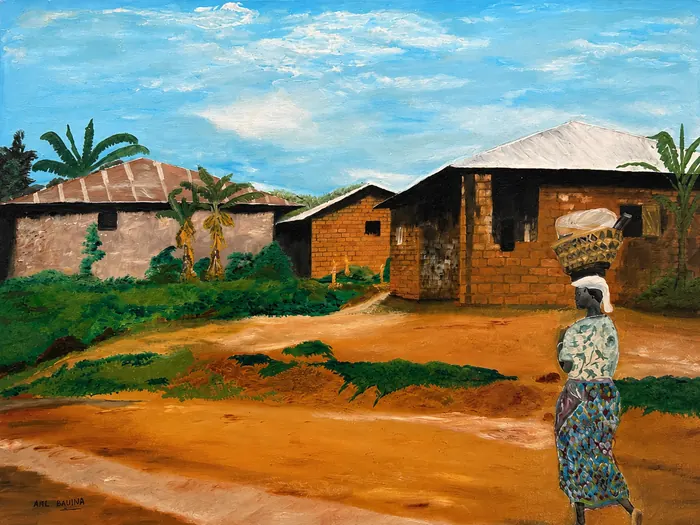
{kind=link}
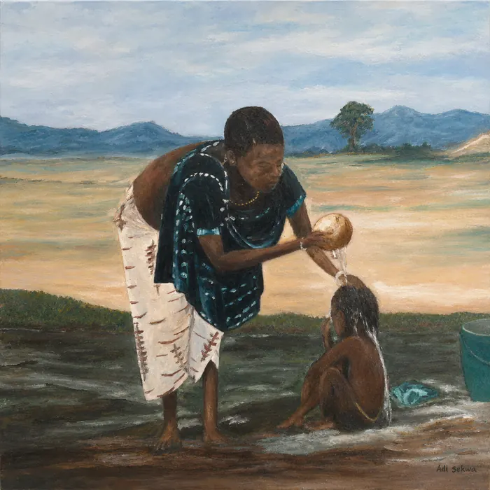
{kind=link}
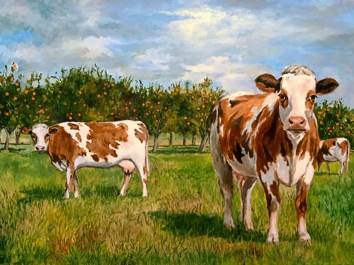
{kind=link}
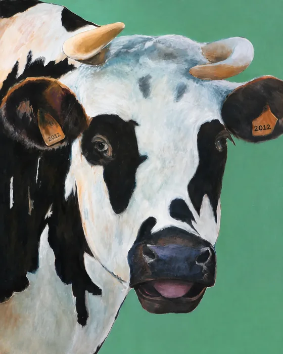
{kind=link}
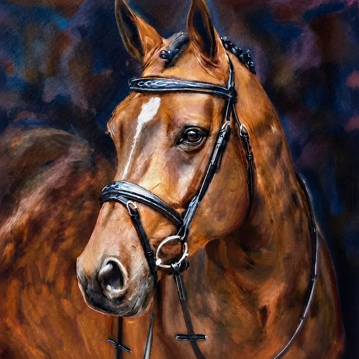
{kind=link}
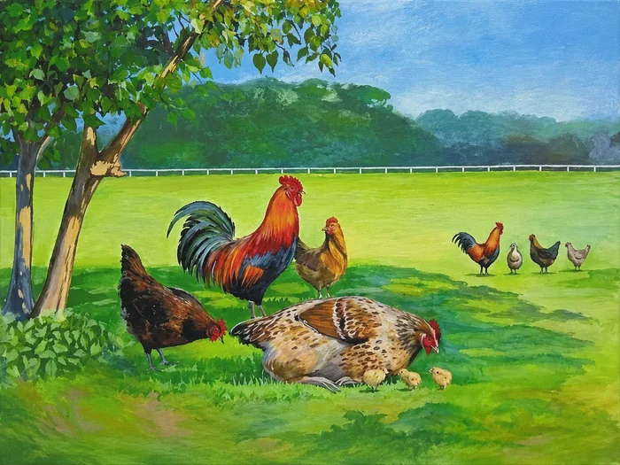
{kind=link}
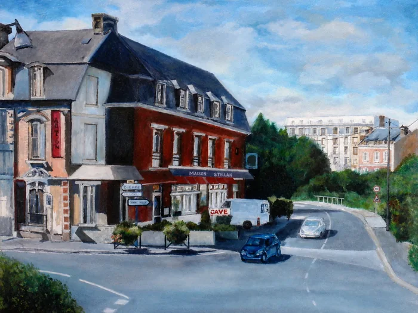
{kind=link}
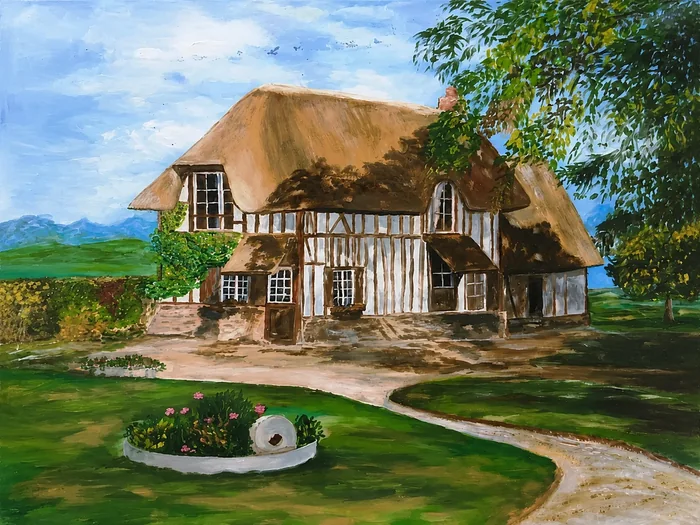
{kind=link}
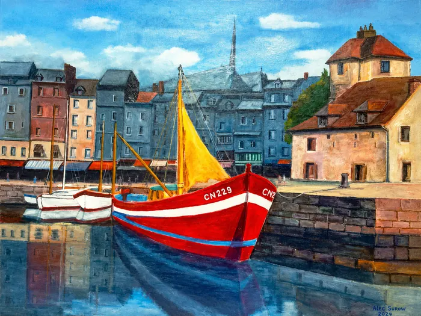
{kind=link}
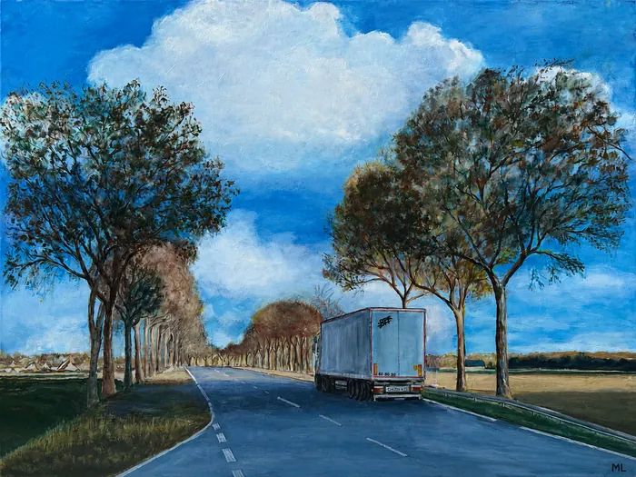
{kind=link}
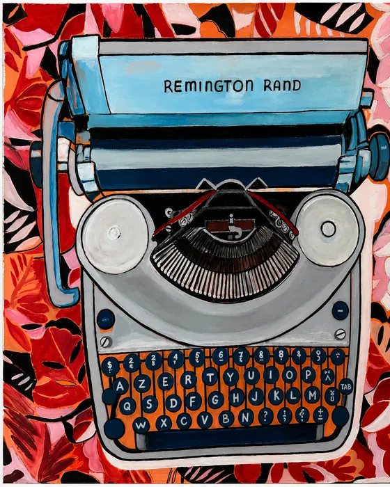
{kind=link}
{kind=link}
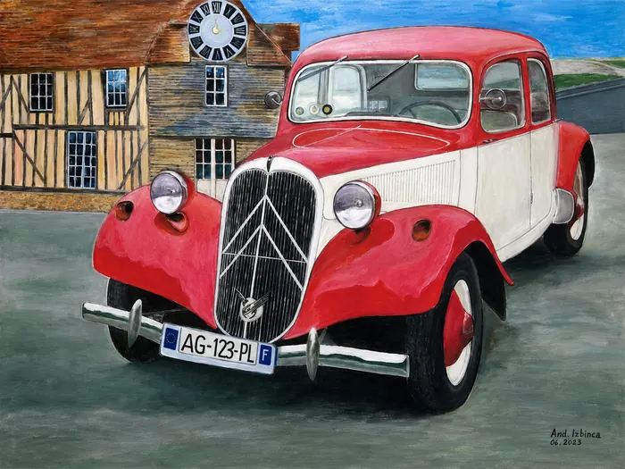
{kind=link}
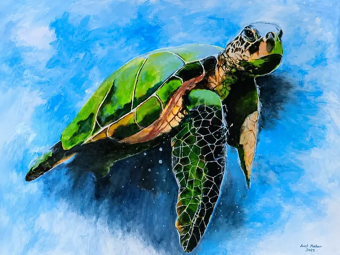
{kind=link}
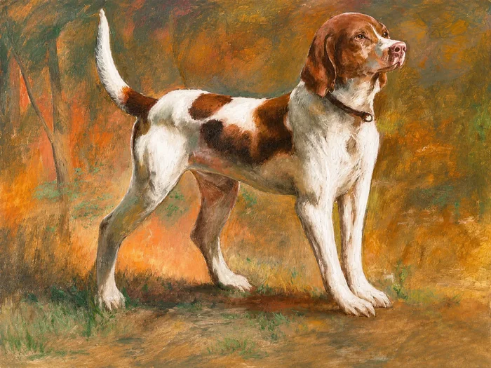
{kind=link}
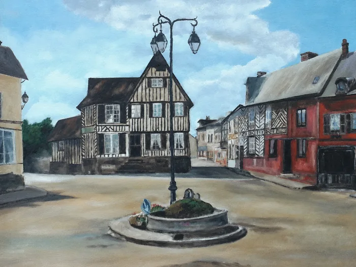
{kind=link}
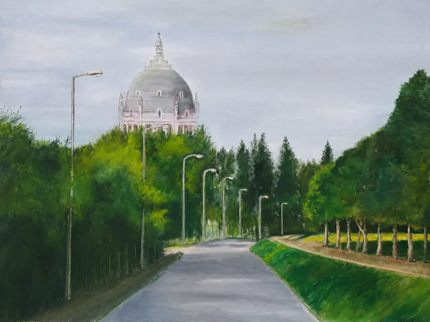
{kind=link}
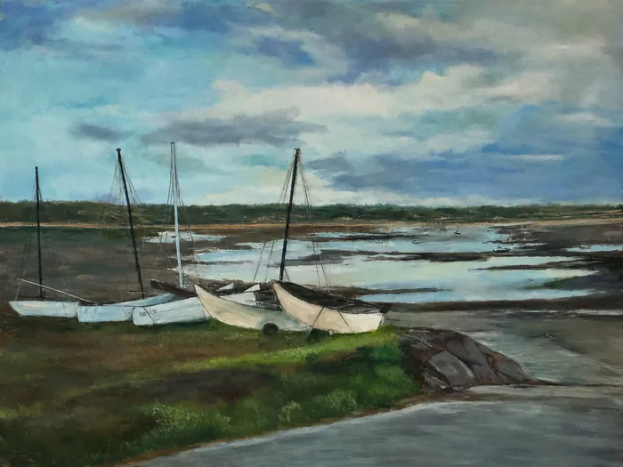
{kind=link}
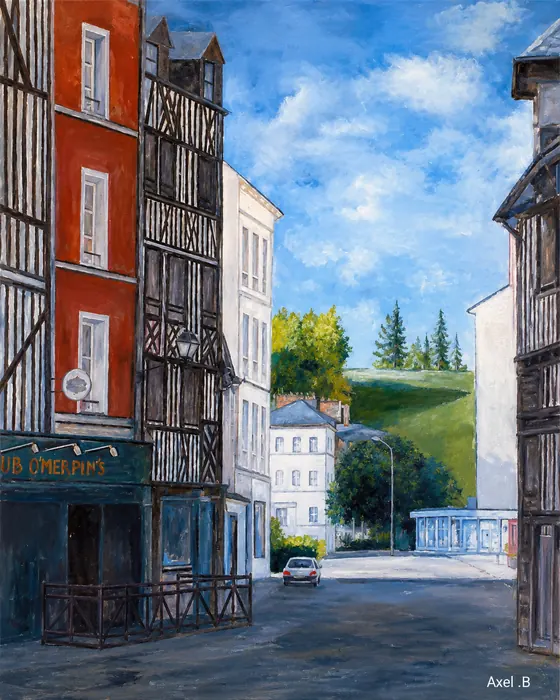
{kind=link}
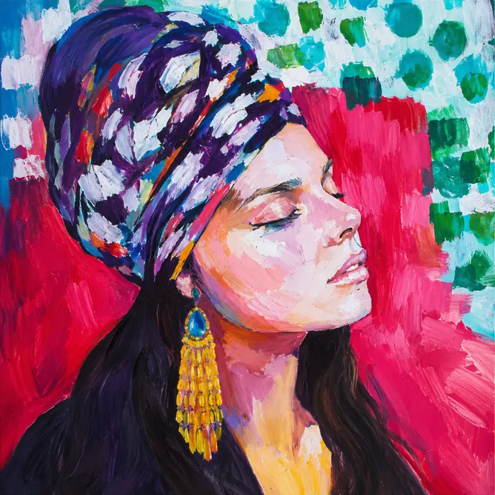
{kind=link}
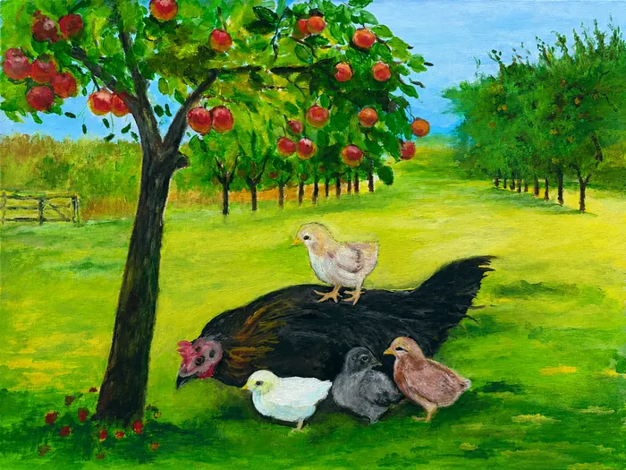
{kind=link}
22 œuvres affichées
Parcours
D’une lumière à l’autre
Un parcours construit avec patience, de l’enfance à Kinshasa à une pratique artistique à temps plein en Normandie.
1954
Naissance à Kinshasa
Axel grandit dans le quartier de Kifuma. Le dessin s’impose très tôt dans son enfance.
1976
Départ pour la Belgique
À vingt-deux ans, il rejoint son frère et découvre une nouvelle lumière européenne.
1978
Arrivée en France
Axel s’installe à Paris, où il vit pendant environ cinq ans.
1983
Installation à Lisieux
La Normandie devient son territoire de vie, d’observation et de création.
1994
Cours d’arts plastiques
Dans les anciens locaux de l’usine Wonder à Lisieux, il approfondit la technique, les pinceaux et la couleur.
Date à confirmer
Première exposition connue
L’Imprimerie Pascal accueille ses œuvres. Il rejoint ensuite l’Académie des arts de Lisieux.
Au fil des années
Expositions régulières
Lisieux, Blangy-le-Château, Broglie, Pont-Audemer, Honfleur, Bernay, Cabourg, Caen, Chartres, Paris et Saint-Denis.
2020
Église Saint-Jacques
Des œuvres sont présentées dans ce lieu historique de Lisieux.
2022
Retraite
Axel peut enfin consacrer une grande partie de son temps à la peinture.
2024
Hommage à Yvette Roudy
Une œuvre est présentée plusieurs mois dans les jardins de l’Hôtel de Ville de Lisieux.
Aujourd’hui
Créer et transmettre
Il travaille à de grands paysages, des animaux et une collection destinée à sa famille.
Dans l’atelier
Le silence, la durée et le retour sur l’œuvre
Il n’existe pas d’heure fixe pour commencer un tableau. Le travail dépend de la disponibilité, de l’état d’esprit et de la lumière du jour. Une fois entré dans la peinture, Axel peut travailler huit heures d’affilée.
Une œuvre peut rester de côté quelques semaines, plusieurs mois ou même plusieurs années avant d’être reprise. Le public la croit parfois terminée alors que le peintre voit encore ce qu’elle pourrait devenir.
« Pour un artiste, une œuvre n’est jamais vraiment terminée. »
Expositions et archives
Un parcours fait de rencontres
De l’Imprimerie Pascal à l’église Saint-Jacques, de Blangy-le-Château à Honfleur, son parcours s’est construit au fil des expositions et des rencontres.
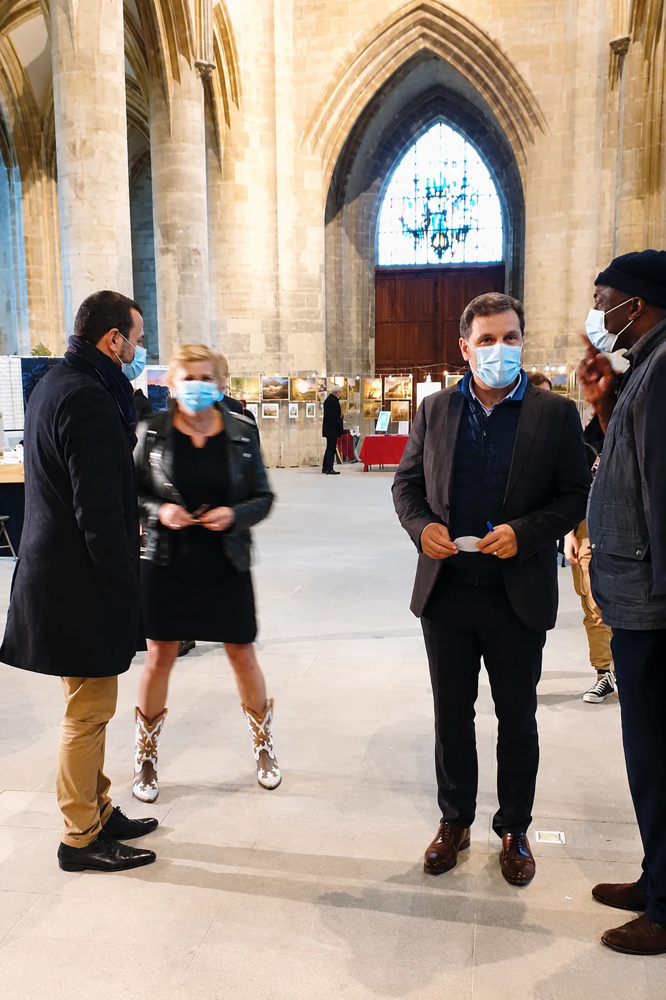
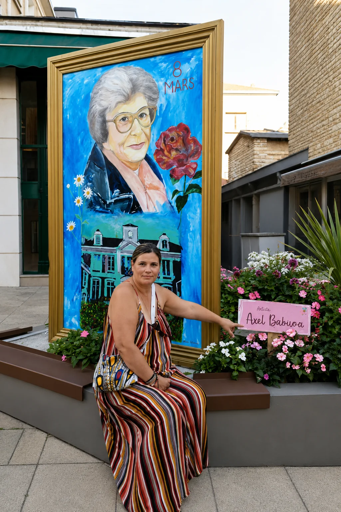
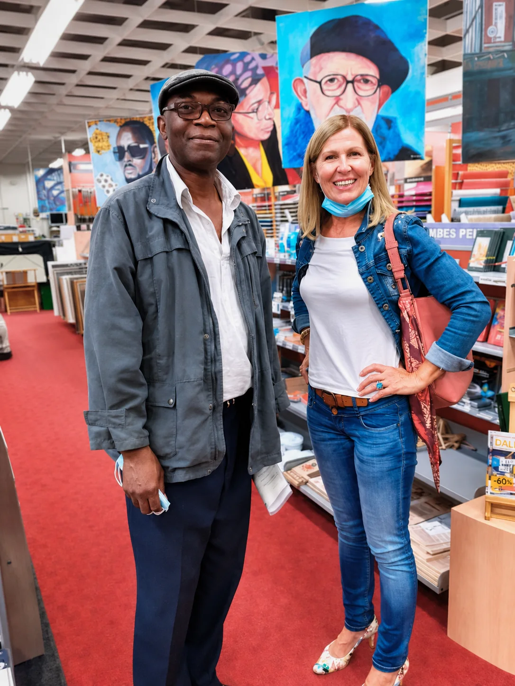
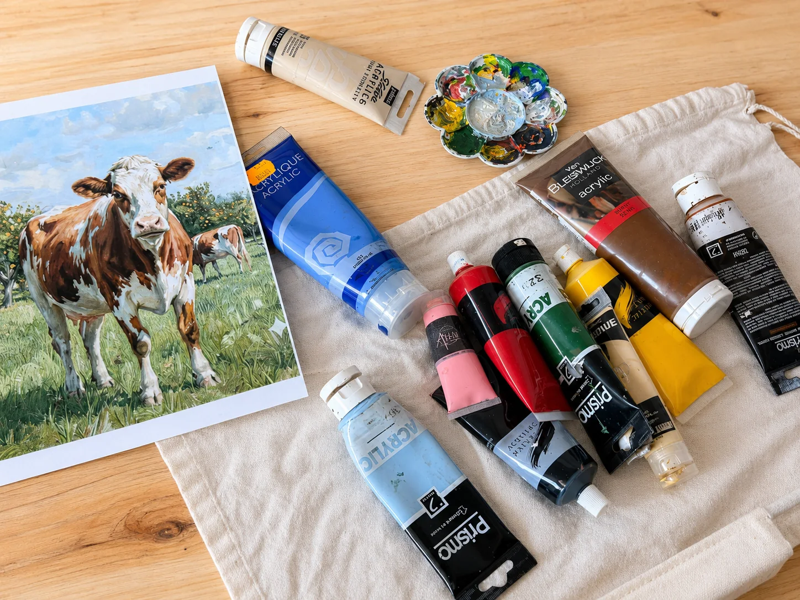
LisieuxBlangy-le-ChâteauBrogliePont-AudemerHonfleurBernayCabourgCaenChartresParisSaint-Denis
Transmission
Ce qu’il souhaite laisser
Axel imagine une collection familiale d’une vingtaine à une trentaine de grandes œuvres : paysages, forêts, animaux et scènes normandes qui ne seraient pas destinés à être vendus. Une trace durable, confiée à ses enfants.
« J’aimerais que l’on dise que j’ai fait de belles choses. »
Contact
Échanger autour d’une œuvre
Ce site présente le parcours et l’univers artistique d’Axel Bahuna. Il ne s’agit pas d’une boutique en ligne. Pour obtenir davantage d’informations sur une œuvre, proposer une exposition ou adresser un message à l’artiste, utilisez le formulaire.
Saint-Désir · Près de Lisieux · Normandie